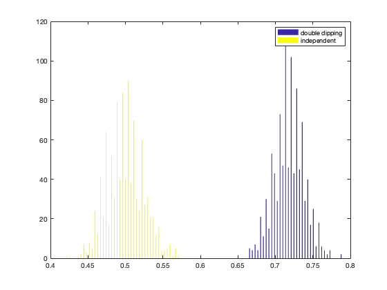

Double dipping
% Warning: this exercise shows the *bad* practice of double dipping % (also known as circular analysis). You must never, ever use % results double dipping to interpret results for a real analysis that you % would publish. nfeatures = 100; nsamples_per_class = 200; nclasses = 2; niter = 1000; % compute number of samples nsamples = nclasses * nsamples_per_class; % set targets targets = repmat((1:nclasses)', nsamples_per_class, 1); % allocate space for output accuracies = zeros(niter, 2); for iter = 1:niter % generate random gaussian train data of size nsamples x nfeatures % assign the result to a variable 'train_data' % >@@> train_data = randn(nsamples, nfeatures); % <@@< % for the double dipping test data, assign 'double_dipping_test_data' % to be the same as the training data. % % *** WARNING *** % For real data analyses (that you would publish in a paper) you % must never do double dipping analysis - its results are invalid % **************** % >@@> double_dipping_test_data = train_data; % <@@< % for the independent data, generate random gaussian data (of the % same size as train_data) and assign to a variable % 'independent_test_data' % >@@> independent_test_data = randn(nsamples, nfeatures); % <@@< % compute class labels predictions for both test sets using % cosmo_classify_lda. Store the predictions in % 'double_dipping_pred' and 'independent_pred', respectively % >@@> double_dipping_pred = cosmo_classify_lda(train_data, targets, ... double_dipping_test_data); independent_pred = cosmo_classify_lda(train_data, targets, ... independent_test_data); % <@@< % compute classification accuracies double_dipping_acc = mean(double_dipping_pred == targets); independent_acc = mean(independent_pred == targets); % store accuracies in the iter-th row of the 'accuracies' matrix % >@@> accuracies(iter, :) = [double_dipping_acc, independent_acc]; % <@@< end % show histogram hist(accuracies, 100); legend({'double dipping', 'independent'});